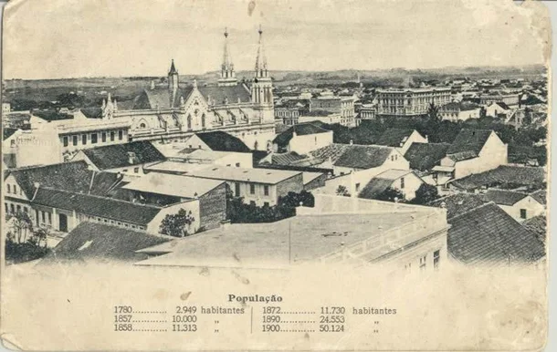
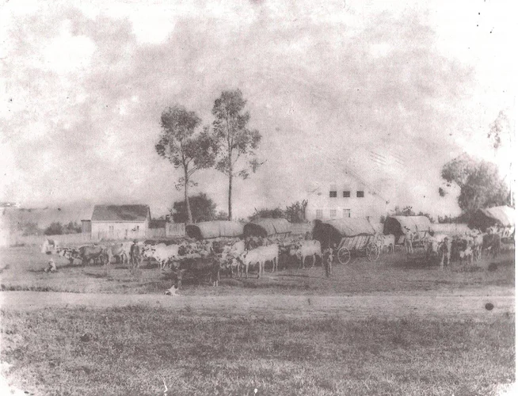
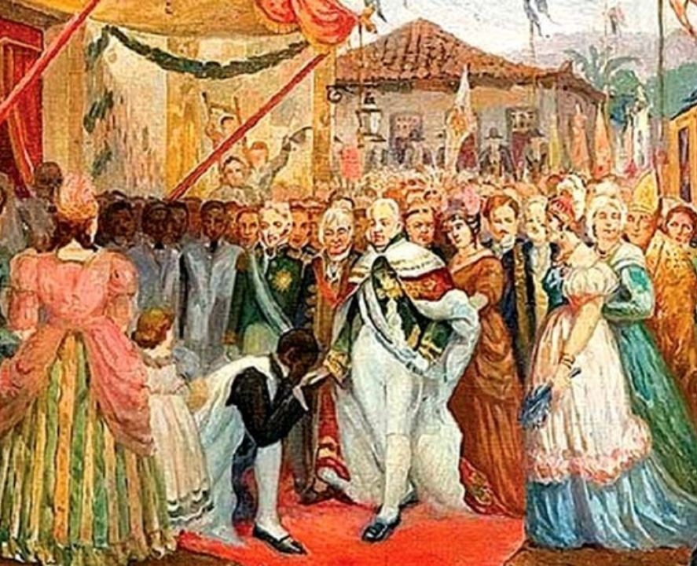
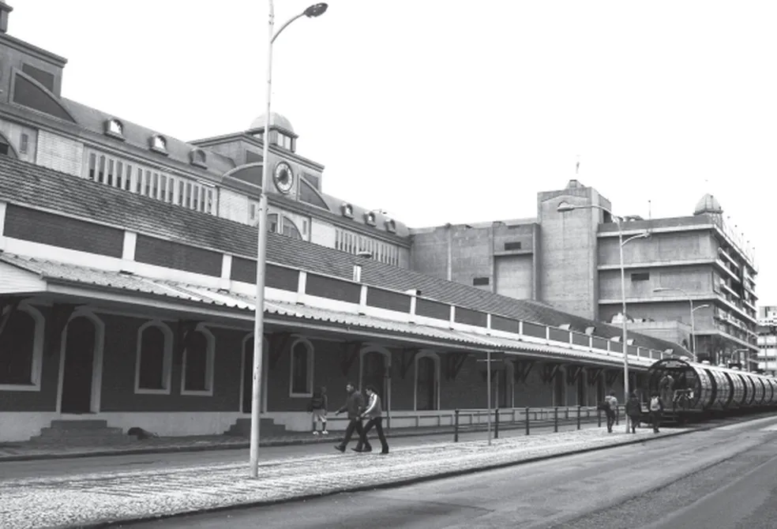
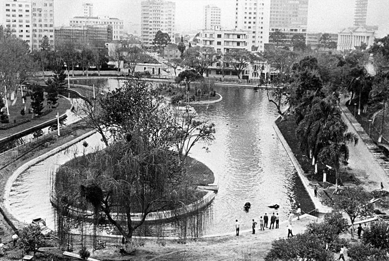

FUNDADA EM 1693
A história viva da nossa cidade
Contada por quem a viveu. Explore séculos de memória, cultura e transformação urbana através de documentos, fotos e relatos históricos.

Contada por quem a viveu. Explore séculos de memória, cultura e transformação urbana através de documentos, fotos e relatos históricos.


FUNDAÇÃOA cidade foi fundada para estabelecer núcleos de povoamento e controle administrativo, dando início à nossa história.

CORTE REALA chegada da Família Real transformou a estrutura social, política e econômica da cidade, abrindo caminho para o desenvolvimento.
 REPÚBLICA
REPÚBLICA
O período republicano trouxe novas ideias de governança e liberdade, redefinindo o papel cívico e a modernização.

INDUSTRIALIZAÇÃOA industrialização acelerou o crescimento urbano, trazendo infraestrutura, ferrovias e novas oportunidades de trabalho.

METRÓPOLEA cidade se consolidou como metrópole, equilibrando inovação, preservação cultural e alta qualidade de vida.
| Nome | Tipo | Época | Avaliação |
|---|---|---|---|
| Igreja da Sé | Religioso | 1710 | ★★★★★ |
| Palácio do Governo | Histórico | 1808 | ★★★★★ |
| Mercado Municipal | Cultural | 1892 | ★★★★★ |
| Porto das Artes | Turístico | 1750 | ★★★★★ |
| Museu da Cidade | Cultural | 1940 | ★★★★★ |
| Jardim Histórico | Lazer | 1889 | ★★★★★ |